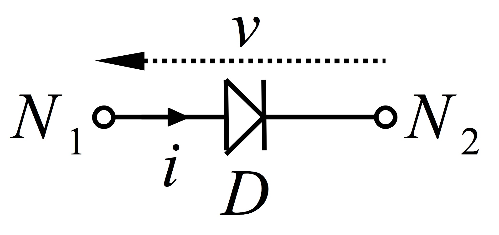

Diode PN

Description
-
Non-linear semiconductor PN junction.
-
It is free-controlled.
-
The model is the same as in Spice simulators (see [Spice1994]).
-
It is made of the serial connection of
-
a resistor $R$ with
-
the parallel connection of
- a minimal conductance and
- a nonlinear branch that restores the Shockley diode law.
-
-
The constitutive law is [Shockley1949] $$ \left\{ \begin{array}{rcl} w(t) & = & i(t), \\ v(t) & = & z(w(t)) = \mu\,v_0 \, \log\left(\frac{w(t)}{I_s}+1\right), \end{array}\right. $$ or $$ \left\{ \begin{array}{rcl} w(t) & = & v(t), \\ i(t) & = & z(w(t)) = I_s\,(\exp\left(\frac{w(t)}{\mu\,v_0}\right)-1), \end{array}\right. $$
-
The minimal conductance is a configuration parameter of the module pyphs.dictionary.
| Parameter | Description (SI unit) | Typical value |
| $I_s$ | saturation current (A) | 2e-9 |
| $v_0$ | thermal voltage (V) | 26e-3 |
| $\mu$ | ideality factor (d.u) | 1.7 |
| $R$ | connectors resistance ($\Omega$) | 0.5 |
Usage
electronics.diodepn label ('N1', 'N2'): Is=('Issymb', Isval), v0=('v0symb', v0val), mu=('musymb', muval);
- label:
- string, diode label.
- N1, N2:
- strings, nodes labels. Positive direction of current is "N1 -> N2".
- Issymb:
- string, saturation current parameter symbol.
- Isval:
- strictly positive float, saturation current parameter value.
- v0symb:
- string, thermal voltage parameter symbol.
- v0val:
- strictly positive float, thermal voltage parameter value.
- musymb:
- string, ideality factor parameter symbol.
- muval:
- strictly positive float, ideality factor parameter value.
- Rsymb:
- string, connectors resistance parameter symbol.
- Rval:
- strictly positive float, connectors resistance parameter value.
Example
For a diode named D1 between nodes A and B, with typical parameters values:
- In netlist.net
electronics.diodepn D1 ('A', 'B'): Is=('Is', 2e-9), v0=('v0', 26e-3), mu=('mu', 1.7), R=('Rd1', 0.5);
- In script.py
# diode diode = {'dictionary': 'electronics', 'component': 'diodepn', 'label': 'D1', 'nodes': ('OUT', datum), 'arguments': {'Is': ('Is', 2e-9), 'v0': ('v0', 26e-3), 'R': ('Rd1', 0.5), 'mu': ('mu', 1.7)}} phs.graph.netlist.add_line(diode)
References
| [Shockley1949] | Shockley, W. (1949). The Theory of p-n Junctions in Semiconductors and p-n Junction Transistors. The Bell System Technical Journal. 28 (3): 435–489. Equation 3.13 on page 454. |
| [Spice1994] | Vladimirescu, A. (1994). The SPICE book. John Wiley & Sons, Inc.. |